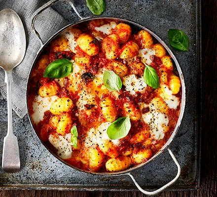

Chorizo and mozzarella gnocchi bake

Description:
Serves 6 and only takes 35 minutes of prep and cooking
Ingredients:
- 1 tbsp olive oil
- 1 onion, finely chopped
- 2 garlic cloves, crushed
- 120g chorizo, diced
- 800g chopped tomatoes (2 400g cans)
- 1 tsp caster sugar
- 600g gnocchi
- 125g mozzarella ball, cut into chunks
- small bunch of basil, torn
Steps:
- Heat oil in a pan over medium heat
- Fry the onion and garlic until soft
- Add chorizo and fry for 5 mins more
- Tip in the tomatoes and sugar, and season
- Bring to a simmer, then add the gnocchi and cook until soft
- Heat the grill to high
- Stir 3/4 of the mozzarella and most of the basil through the gnocchi
- Pour into a baking dish, topped with mozzarella, then grill until the cheese is melted and golden
- Scatter over the remaining basil and serve with green salad